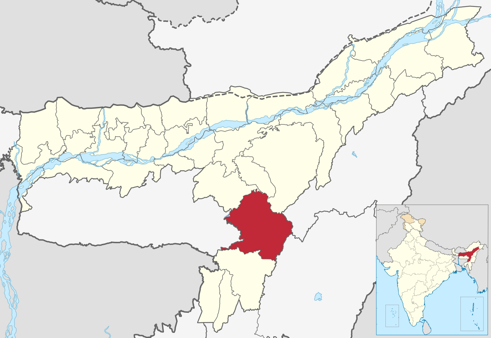

|
 |
Haflong |
Dima Hasao is a hill district located in the southern part of Assam, India. Haflong is the headquarters of the district and is situated in a beautiful hilly region.
The district covers an area of about 4,888 square kilometres. It is mainly a hilly region with the Borail Range and the Shillong Plateau forming important geographical features.
Dima Hasao is bordered by Nagaland and Manipur in the east, the Barak Valley districts in the south, Meghalaya in the west, and Hojai, Karbi Anglong and West Karbi Anglong in the north.
The hilly landscape, forests, valleys, streams and waterfalls give Dima Hasao its beautiful natural environment and make it an attractive destination for tourism.
Haflong, the district headquarters, is situated at an altitude of about 966 metres above sea level. Its elevated location gives it a pleasant climate compared with the plains of Assam.
Dima Hasao is known for its rich cultural heritage and ethnic diversity. Several indigenous communities, including the Dimasa, Zeme Naga, Hmar, Kuki, Biate and Karbi, live in the district. Each community has its own language, traditions, festivals, music, dance and traditional lifestyle.
The district has a rich historical background. It was formerly known as North Cachar Hills and was renamed Dima Hasao in 2010. The history of the region is closely associated with the Dimasa people and their traditional kingdom. Maibang is an important historical place connected with the heritage of the Dimasa Kingdom.
Dima Hasao is famous for its beautiful tourist attractions. Haflong Lake is one of the popular attractions of Haflong town. Jatinga is well known for its seasonal bird phenomenon, while Maibang attracts visitors interested in history and culture. These places contribute to the tourism potential of the district.
The district has a pleasant natural environment consisting of green hills, dense forests, valleys, rivers and streams. Its varied landscape supports different types of plants and wildlife. The natural beauty of the region provides excellent opportunities for sightseeing, photography, nature walks and eco-tourism.
Agriculture and traditional occupations play an important role in the lives of many people in Dima Hasao. People are engaged in farming, horticulture, weaving, handicrafts and other local economic activities. Bamboo and cane crafts and traditional handloom products reflect the creativity and skills of the local communities.
The climate of Dima Hasao is influenced by its mountainous terrain and seasonal rainfall. The monsoon season brings heavy rain and lush greenery, while winter generally offers cooler conditions. These seasonal changes add to the beauty of the landscape and influence tourism activities.
Tourism has considerable potential to support the economic development of Dima Hasao. It can create employment opportunities for local people through hotels, homestays, transportation, guiding services and the sale of handicrafts. Responsible tourism can also help preserve the cultural heritage and natural environment of the district.
Despite its natural and cultural attractions, Dima Hasao faces challenges such as difficult mountainous roads, landslides during heavy rainfall and limited tourism facilities in some areas. Better infrastructure, environmental protection and community participation can help develop tourism in a sustainable manner.
| << Previous | More Information | Next >> |